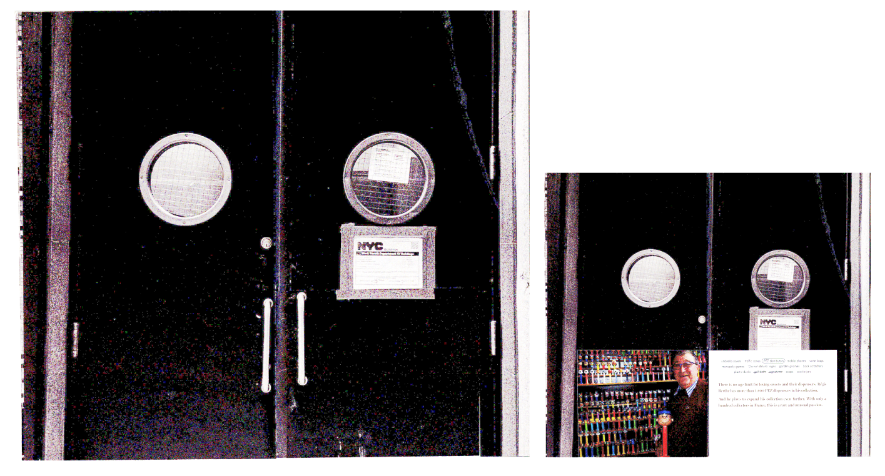
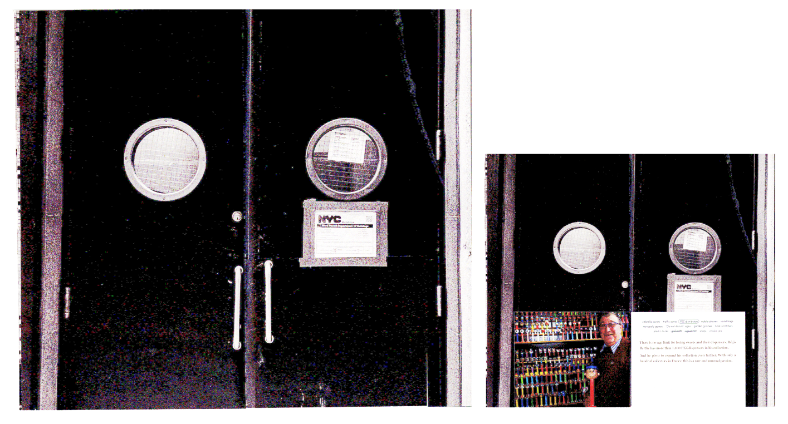
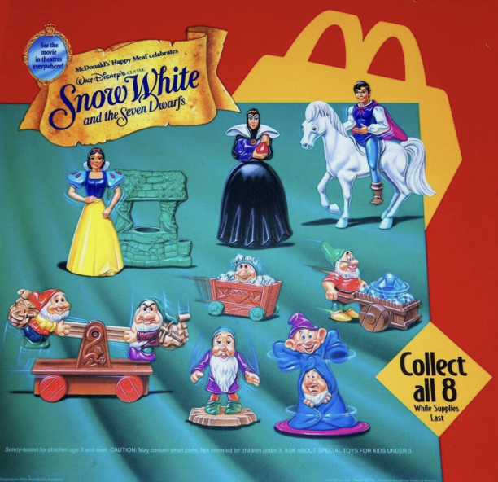
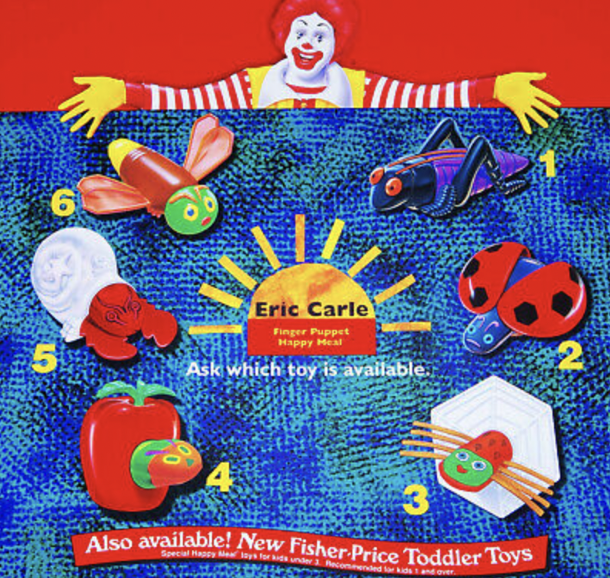
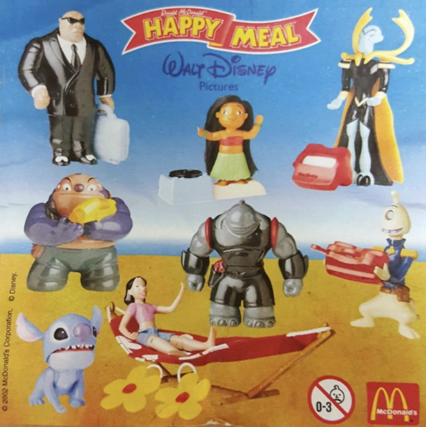
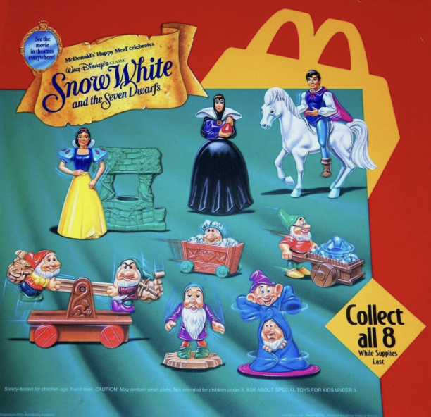
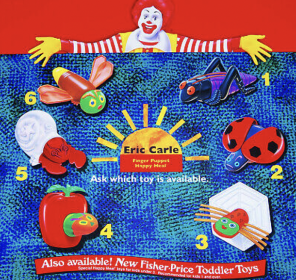
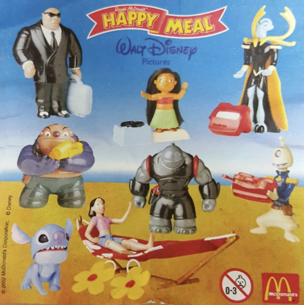
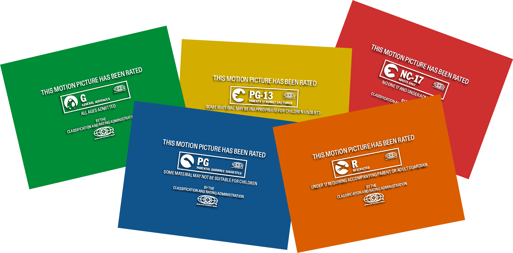
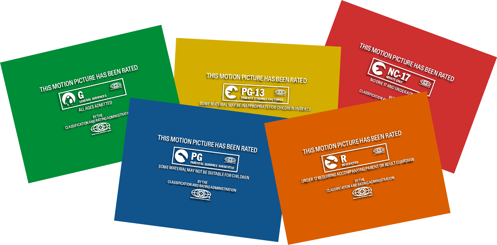

This book traces my journey from childhood to becoming a senior art student in New York. Through personal narratives, I reflect on how my family, upbringing, and key life events have shaped my creative identity. It serves as a self-portrait of the experiences that continue to influence how I think, work, and grow as an artist.
Helsink-Vantaa Airport Brand & Identity Redesign
Redesigned the brand and visual identity for Helsinki Airport, complementing its 2021 expansion by ALA Architects (Juho Grönholm, Antti Nousjoki, Samuli Woolston). The identity conveys the essence of Finland through organic, rounded shapes and a palette of green and wood tones, evoking nature and warmth. It enhances the airport’s sense of adventure and romance, while reflecting improved functionality
Doors
This project began by collecting images of doors across New York City, exploring the question: what lies behind each door? It grew to feature individuals who collect objects endlessly, reflecting how curiosity drives the act of collecting. The book incorporates a tactile experience: smaller page spreads camouflage within larger spreads, revealing themselves when flipped. Each flip evokes curiosity, inviting the audience to wonder about the people behind the doors.
Happy Meal Toys Archive
Inspired by childhood visits to my aunt’s room, this website archives and showcases her collection of Happy Meal toys. It transforms a personal memory into a playful digital experience, celebrating nostalgia and the joy of discovery.
Fruits, Vegetables; Fruit and Vegetable Salad
A mock animation created for the exhibition “Fruits, Vegetables: Fruit and Vegetable Salad Campaign” at the Whitney Museum, translating the show’s playful and vibrant theme into a dynamic visual identity across print and motion..
MPAA Rating System Redesign
A reimagined MPAA movie rating system using dinosaurs to represent different audience guidance levels. The design follows a growth and hierarchy metaphor, where each dinosaur reflects the intensity and maturity of the content, creating a fun and intuitive visual system.
Risograph Animations
These animations are created by printing each frame using risograph techniques and then digitally sequencing them. This process combines the tactile, textured quality of risograph prints with motion, giving each animation a unique, hand-crafted aesthetic.
ysyeonseo1012@gmail.com
I am a communication design student at Parsons School of Design
exploring print, identity systems, and motion. My work often
investigates memory, curiosity, and archival structures.

 


 





 
